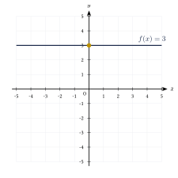
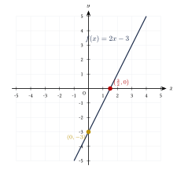
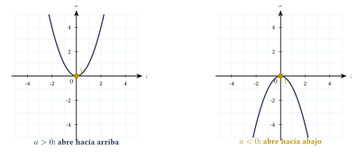
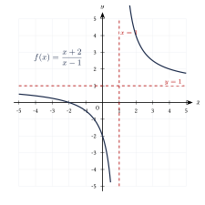
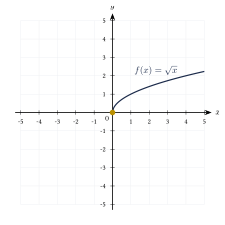
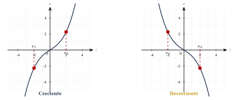
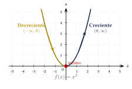
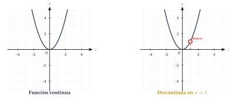

Capítulo 16
Tipos de funciones
UNAMIPNCENEVAL
Las funciones pueden agruparse en familias que comparten determinadas propiedades algebraicas y gráficas. Reconocer la forma de una función permite anticipar su dominio, su rango, su comportamiento y algunas características de su gráfica. En este capítulo estudiarás funciones constantes, afines, cuadráticas, racionales y radicales, así como los conceptos de crecimiento, decrecimiento y continuidad.
16.1 Función constante#
Una función constante tiene la forma:
Esta función asigna el mismo valor \(c\) a todos los elementos de su dominio. Su gráfica es una recta horizontal.
Si
entonces:
- su dominio es: \[D_f=\R;\]
- su rango es: \[R_f=\{c\};\]
- su gráfica interseca el eje \(y\) en el punto: \[(0,c);\]
- no es estrictamente creciente ni estrictamente decreciente.
Analiza la función:
Ver solución
La función asigna el valor \(3\) a cualquier número real:
para todo \(x\in\R\). Por tanto:
Su gráfica es la recta horizontal \(y=3\):

16.2 Función afín#
Una función afín tiene la forma:
donde \(a,b\in\R\).
El número \(a\) es la pendiente de la recta y \(b\) es la ordenada al origen.
En algunos materiales escolares se utiliza el nombre función lineal para toda expresión de la forma:
En sentido estricto, una función lineal tiene la forma:
y pasa por el origen. En esta guía se utilizará el término función afín para la forma general \(f(x)=ax+b\).
Si
y \(a\neq 0\), entonces:
- su dominio es: \[D_f=\R;\]
- su rango es: \[R_f=\R;\]
- es estrictamente creciente si: \[a>0;\]
- es estrictamente decreciente si: \[a<0;\]
- interseca el eje \(y\) en: \[(0,b);\]
- interseca el eje \(x\) en: \[\left(-\frac{b}{a},0\right).\]
Analiza la función:
Ver solución
La pendiente es:
y la ordenada al origen es:
Como \(a>0\), la función es creciente. La gráfica interseca el eje \(y\) en:
Para encontrar la intersección con el eje \(x\), resolvemos:
Por tanto, la intersección con el eje \(x\) es:
La gráfica es:

16.3 Función cuadrática#
Una función cuadrática tiene la forma:
Su gráfica es una parábola con eje de simetría vertical.
- Si \(a>0\), la parábola abre hacia arriba.
- Si \(a<0\), la parábola abre hacia abajo.
El vértice de la parábola:
es el punto:
donde:
y:
El eje de simetría es la recta vertical:
Toda función cuadrática tiene dominio:
Si \(a>0\), el vértice contiene el valor mínimo de la función y:
Si \(a<0\), el vértice contiene el valor máximo y:
Las dos orientaciones posibles de una parábola pueden compararse en planos con la misma escala:

Encuentra el vértice, el eje de simetría y el rango de:
Ver solución
Identificamos:
Calculamos la coordenada horizontal del vértice:
Calculamos la coordenada vertical:
Por tanto, el vértice es:
El eje de simetría es:
Como \(a>0\), la parábola abre hacia arriba y el vértice contiene el valor mínimo. Por tanto:
16.4 Función racional#
Una función racional es una función de la forma:
donde \(P(x)\) y \(Q(x)\) son polinomios y:
Su dominio excluye los valores que anulan el denominador.
Una recta vertical:
es una asíntota vertical de una función si los valores de \(f(x)\) crecen o decrecen sin límite cuando \(x\) se aproxima a \(x_0\) por alguno de sus lados.
La condición \(Q(x_0)=0\) permite identificar valores que no pertenecen al dominio, pero no garantiza por sí sola una asíntota vertical.
Si el factor que produce \(Q(x_0)=0\) se cancela con un factor del numerador, la gráfica puede presentar un hueco en lugar de una asíntota vertical.
Por ejemplo:
Esta función tiene un hueco en \(x=1\), no una asíntota vertical.
Analiza la función:
Ver solución
El denominador se anula cuando:
Como el numerador no se anula en \(x=1\):
la recta:
es una asíntota vertical.
Para determinar la asíntota horizontal, escribimos:
Cuando \(x\) aumenta o disminuye sin límite, el término \(\frac{3}{x-1}\) se aproxima a cero. Por tanto, la asíntota horizontal es:
El dominio es:
La gráfica es:

16.5 Función raíz cuadrada#
Una función raíz cuadrada tiene la forma:
Para que sus valores sean reales, debe cumplirse:
La función:
tiene:
y:
Su gráfica comienza en el origen y es creciente en todo su dominio.

Encuentra el dominio y el punto inicial de la gráfica de:
Ver solución
El radicando debe ser mayor o igual que cero:
Por tanto:
La gráfica comienza cuando \(x=2\):
El punto inicial es:
16.6 Funciones explícitas y relaciones implícitas#
Una función se encuentra en forma explícita cuando la variable dependiente está despejada en términos de la variable independiente:
Por ejemplo:
y:
Una relación se encuentra en forma implícita cuando la relación entre las variables se expresa mediante:
y la variable \(y\) no necesariamente está despejada.
Por ejemplo:
y:
Toda función explícita puede escribirse como una relación implícita. Por ejemplo:
puede escribirse como:
Sin embargo, una relación implícita no siempre representa una única función de \(x\). Por ejemplo, de:
se obtiene:
Para algunos valores de \(x\) aparecen dos valores distintos de \(y\). Por tanto, la circunferencia completa no representa una función de \(x\).
16.7 Funciones crecientes y decrecientes#
Una función \(f\) es estrictamente creciente en un intervalo si, para cualesquiera \(x_1\) y \(x_2\) del intervalo:
Esto significa que, al aumentar el valor de entrada, también aumenta el valor de salida.
Una función \(f\) es estrictamente decreciente en un intervalo si, para cualesquiera \(x_1\) y \(x_2\) del intervalo:
Esto significa que, al aumentar el valor de entrada, disminuye el valor de salida.
Las dos situaciones pueden compararse mediante gráficas construidas con la misma escala:

Una función no tiene que mantener el mismo comportamiento en todo su dominio. Puede ser decreciente en un intervalo y creciente en otro.
Por ejemplo, considera la función:
Cuando \(x\) se aproxima a \(0\) desde la izquierda, los valores de la función disminuyen. Después del vértice, cuando \(x\) aumenta desde \(0\), los valores de la función también aumentan.

Por tanto, la función \(f(x)=x^2\) es:
y
El punto
separa ambos intervalos de monotonía y corresponde al mínimo de la función.
Determina si la función:
es creciente o decreciente en \(\R\).
Ver solución
Sean \(x_1\) y \(x_2\) dos números reales tales que:
Multiplicamos por \(2\), que es positivo:
Sumamos \(5\) en ambos miembros:
Por tanto:
La función es estrictamente creciente en \(\R\).
También puede reconocerse este comportamiento porque su pendiente es positiva:
Evaluar una función solamente en dos puntos puede sugerir su comportamiento, pero no demuestra que sea creciente o decreciente en todo un intervalo. La definición debe cumplirse para cualquier par de puntos \(x_1<x_2\) del intervalo considerado.
16.8 Funciones continuas y discontinuas#
De manera intuitiva, una función es continua en un intervalo si su gráfica puede trazarse sin levantar el lápiz dentro de ese intervalo.
Una función es continua en un punto \(x_0\) si:
- \(f(x_0)\) está definida;
- existe el límite de \(f(x)\) cuando \(x\) se aproxima a \(x_0\);
- dicho límite es igual a \(f(x_0)\).
En símbolos:
Una función presenta una discontinuidad en \(x_0\) cuando no cumple alguna de las condiciones de continuidad.
Gráficamente, una discontinuidad puede manifestarse mediante:
- un hueco;
- un salto;
- una asíntota vertical;
- una oscilación que impide la existencia del límite.
Una función racional:
es continua en todos los puntos de su dominio. Por tanto, puede presentar discontinuidades únicamente en los valores que anulan el denominador:
Las siguientes gráficas comparan una función continua con una función que presenta un hueco. Ambas utilizan la misma escala:

Determina dónde es discontinua la función:
Ver solución
La función es racional y, por tanto, es continua en todos los puntos de su dominio. El denominador se anula cuando:
Como el numerador no se anula en \(x=-3\), la recta:
es una asíntota vertical. Por tanto, la función es discontinua en:
16.9 Ejercicios propuestos#
Clasifica las siguientes funciones como constante, afín, cuadrática, racional o raíz cuadrada:
Ver solución
\(f(x)\) es constante, \(g(x)\) es afín, \(h(x)\) es cuadrática, \(k(x)\) es racional y \(m(x)\) es una función raíz cuadrada.
Encuentra el vértice y el eje de simetría de:
Ver solución
La coordenada \(x\) del vértice es \(x_v = -\frac{-6}{2(1)} = 3\). Evaluando: \(y_v = (3)^2 - 6(3) + 5 = -4\). El vértice es \(V(3, -4)\). El eje de simetría es \(x = 3\).
Encuentra el rango de:
Ver solución
La coordenada \(x\) del vértice es \(x_v = -\frac{-2}{2(1)} = 1\). Evaluando: \(y_v = (1)^2 - 2(1) - 8 = -9\). Como la parábola abre hacia arriba (\(a=1>0\)), el rango es \([-9, \infty)\).
Encuentra el dominio y la asíntota vertical de:
Ver solución
El denominador se anula en \(x=4\) y el numerador no se anula en ese valor (\(2(4)+1=9\neq 0\)). El dominio es \(\R \setminus \{4\}\). La asíntota vertical es la recta \(x = 4\).
Encuentra el dominio de:
Ver solución
El denominador se factoriza como \(x^2-5x-6 = (x-6)(x+1)\). Se anula en \(x=6\) y \(x=-1\). Por tanto, el dominio es \(\R \setminus \{-1, 6\}\).
Encuentra el dominio de:
Ver solución
Para que la raíz esté definida en los reales, el radicando debe ser no negativo: \[4 - 2x \geq 0 \implies -2x \geq -4 \implies x \leq 2.\] El dominio es \((-\infty, 2]\).
Determina si la función:
es creciente o decreciente.
Ver solución
La función es afín con pendiente \(a = -3 < 0\), por lo que es estrictamente decreciente.
Determina si:
es creciente o decreciente en cada uno de los siguientes intervalos:
Ver solución
Para \(x>0\), a medida que \(x\) aumenta, \(x^2\) aumenta, luego es creciente en \((0, \infty)\). Para \(x<0\), a medida que \(x\) aumenta (se vuelve menos negativo), \(x^2\) disminuye, luego es decreciente en \((-\infty, 0)\).
Encuentra el valor en el que es discontinua la función:
Ver solución
La función es racional y su denominador se anula en \(x=5\). Por tanto, es discontinua en \(x=5\).
Clasifica las siguientes expresiones como explícitas o implícitas:
Cuando sea posible, despeja \(y\).
Ver solución
\(y = 3x-7\) es explícita. \(x^2+y^2=25\) es implícita. Al despejar se obtiene \(y = \pm\sqrt{25-x^2}\). \(2x+3y=6\) es implícita. Al despejar se obtiene \(y = \frac{6-2x}{3} = 2 - \frac{2}{3}x\).